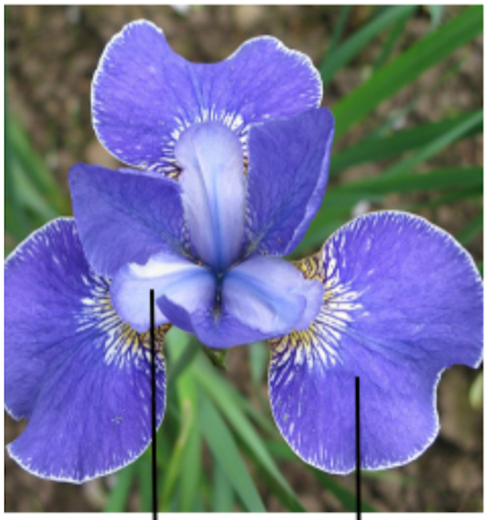
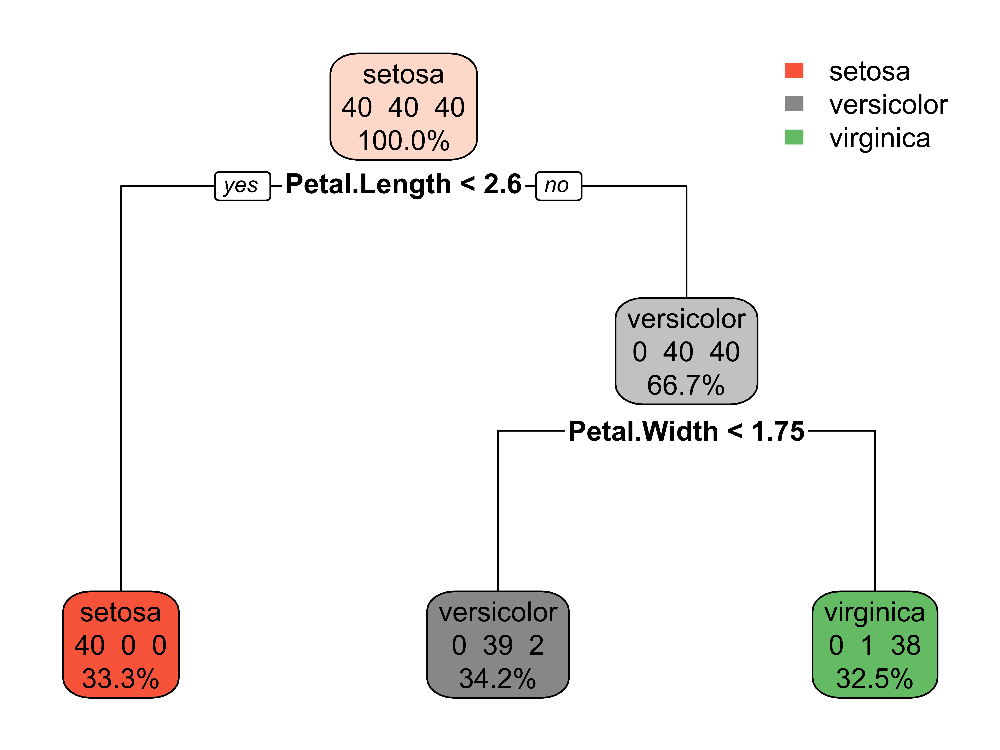

Decision Trees
MATH/COSC 3570 Introduction to Data Science
Dr. Cheng-Han Yu
Department of Mathematical and Statistical Sciences
Marquette University
Department of Mathematical and Statistical Sciences
Marquette University
Why Do We Care About Trees?
A decision tree predicts by asking a sequence of simple questions.
Each question splits the data into smaller and more homogeneous groups.
Trees can be used for both classification and regression.
Contains many links?
→ Yes
Contains suspicious words?
→ Yes
Classify as: Spam
Loans
Income high enough?
→ Yes
Debt too large?
→ No
Classify as: Approve

Biology
Petal length < 2.5 cm?
→ Yes
Petal width < 1 cm?
→ Yes
Classify as: Setosa

The Main Idea
Instead of fitting one single equation, a tree repeatedly splits the predictor space into regions.
Start with all training data at the root.
Ask a question such as
Petal.Length < 2.5?Split the data into two child nodes.
Keep splitting until the groups are simple enough.
At the end, each leaf makes a prediction.
Root node: the first split
Internal node: a question
Leaf (terminal) node: the final prediction
%%{init: {'theme':'base', 'themeVariables': { 'fontSize': '24px'}}}%%
graph TD
A[An iris] --> B{Petal length < 2.5?}
B -- Yes --> C[Predict setosa]
B -- No --> D{Petal width < 1.7?}
D -- Yes --> E[Predict versicolor]
D -- No --> F[Predict virginica]
classDef start fill:#E3F2FD,stroke:#1E88E5,stroke-width:2px,color:#0D47A1,font-size:24px;
classDef question fill:#FFF3E0,stroke:#FB8C00,stroke-width:2px,color:#E65100,font-size:24px;
classDef setosa fill:#E8F5E9,stroke:#43A047,stroke-width:2px,color:#1B5E20,font-size:24px;
classDef versicolor fill:#F3E5F5,stroke:#8E24AA,stroke-width:2px,color:#4A148C,font-size:24px;
classDef virginica fill:#FCE4EC,stroke:#D81B60,stroke-width:2px,color:#880E4F,font-size:24px;
class A start;
class B,D question;
class C setosa;
class E versicolor;
class F virginica;
Trees Split the Predictor Space
%%{init: {'theme':'base', 'themeVariables': { 'fontSize': '24px'}}}%%
graph TD
A[An iris] --> B{Petal length < 2.5?}
B -- Yes --> C[Predict setosa]
B -- No --> D{Petal width < 1.7?}
D -- Yes --> E[Predict versicolor]
D -- No --> F[Predict virginica]
classDef start fill:#E3F2FD,stroke:#1E88E5,stroke-width:2px,color:#0D47A1,font-size:24px;
classDef question fill:#FFF3E0,stroke:#FB8C00,stroke-width:2px,color:#E65100,font-size:24px;
classDef setosa fill:#E8F5E9,stroke:#43A047,stroke-width:2px,color:#1B5E20,font-size:24px;
classDef versicolor fill:#F3E5F5,stroke:#8E24AA,stroke-width:2px,color:#4A148C,font-size:24px;
classDef virginica fill:#FCE4EC,stroke:#D81B60,stroke-width:2px,color:#880E4F,font-size:24px;
class A start;
class B,D question;
class C setosa;
class E versicolor;
class F virginica;
- A tree usually makes axis parallel splits.
- In two predictors, these splits create rectangles.
- Every rectangle corresponds to one leaf.

How Does the Tree Choose a Split?
For a classification tree, the goal is to create purer groups.
A common impurity measure is the Gini index:
\[ \text{Gini} = 1 - \sum_{k=1}^{K} p_k^2, \]
where \(p_k\) is the proportion of class \(k\) inside a node.
- If a node is all one class, Gini = 0.
- If a node is a mixture of classes, Gini is larger.
- The tree searches over many candidate questions and picks the split that most reduces impurity.
Gini Intuition
Almost pure leaf
- 9 setosa
- 1 versicolor
- 0 virginica
\[ \text{Gini} = 1 - (0.9^2 + 0.1^2 + 0^2) = 0.18 \]
Mixed leaf
- 4 setosa
- 3 versicolor
- 3 virginica
\[ \text{Gini} = 1 - (0.4^2 + 0.3^2 + 0.3^2) = 0.66 \]
Smaller Gini means a cleaner, easier to classify node.
How Does Prediction Work?
To classify a new observation:
- Start at the root.
- Check the first rule.
- Move left or right.
- Continue until you reach a leaf.
- Predict the majority class in that leaf.
A leaf can also report estimated class probabilities.
Example:
- Leaf contains 18 versicolor and 2 virginica.
- Predicted class =
versicolor - Estimated probabilities: 0.90 and 0.10
%%{init: {'theme':'base', 'themeVariables': { 'fontSize': '24px'}}}%%
graph TD
A[NEW iris] --> B{Petal length < 2.5?}
B -- Yes --> C[Predict setosa]
B -- No --> D{Petal width < 1.7?}
D -- Yes --> E[Predict versicolor]
D -- No --> F[Predict virginica]
classDef start fill:#E3F2FD,stroke:#1E88E5,stroke-width:2px,color:#0D47A1,font-size:24px;
classDef question fill:#FFF3E0,stroke:#FB8C00,stroke-width:2px,color:#E65100,font-size:24px;
classDef setosa fill:#E8F5E9,stroke:#43A047,stroke-width:2px,color:#1B5E20,font-size:24px;
classDef versicolor fill:#F3E5F5,stroke:#8E24AA,stroke-width:2px,color:#4A148C,font-size:24px;
classDef virginica fill:#FCE4EC,stroke:#D81B60,stroke-width:2px,color:#880E4F,font-size:24px;
class A start;
class B,D question;
class C setosa;
class E versicolor;
class F virginica;
Why Are Trees Popular?
- Very interpretable
- Handle nonlinear relationships naturally
- Capture interactions automatically
- Need little preprocessing
- Work with numerical and categorical predictors
But they also have weaknesses:
- can overfit
- can be unstable
- one small data change can change the tree a lot
- axis parallel splits can be too rigid

Overfitting and Pruning
A very deep tree can memorize the training data.
Common controls:
-
tree_depth: limit how deep the tree can grow -
min_n: require enough observations before a split -
cost_complexity: penalize unnecessary splits
A shallow tree is often easier to explain and generalizes better.
Load and Prepare Data
iris_tree <- as_tibble(iris) |>
select(Species, Petal.Length, Petal.Width) |>
mutate(Species = as.factor(Species))
iris_tree# A tibble: 150 × 3
Species Petal.Length Petal.Width
<fct> <dbl> <dbl>
1 setosa 1.4 0.2
2 setosa 1.4 0.2
3 setosa 1.3 0.2
4 setosa 1.5 0.2
5 setosa 1.4 0.2
6 setosa 1.7 0.4
# ℹ 144 more rowsTraining and Test Data
Fit the Tree
# recipe
tree_recipe <-
recipe(
Species ~ Petal.Length + Petal.Width,
data = train_tbl)
# model
tree_spec <- decision_tree(
mode = "classification",
tree_depth = 2,
cost_complexity = 0.001) |>
set_engine("rpart")
# workflow and fit
tree_fit <- workflow() |>
add_recipe(tree_recipe) |>
add_model(tree_spec) |>
fit(data = train_tbl)-
tree_depth = 2keeps the tree simple. -
cost_complexitydiscourages unnecessary splits.
══ Workflow [trained] ══════════════════════════════════════════════════════════
Preprocessor: Recipe
Model: decision_tree()
── Preprocessor ────────────────────────────────────────────────────────────────
0 Recipe Steps
── Model ───────────────────────────────────────────────────────────────────────
n= 120
node), split, n, loss, yval, (yprob)
* denotes terminal node
1) root 120 80 setosa (0.3333 0.3333 0.3333)
2) Petal.Length< 2.6 40 0 setosa (1.0000 0.0000 0.0000) *
3) Petal.Length>=2.6 80 40 versicolor (0.0000 0.5000 0.5000)
6) Petal.Width< 1.75 41 2 versicolor (0.0000 0.9512 0.0488) *
7) Petal.Width>=1.75 39 1 virginica (0.0000 0.0256 0.9744) *Visualize the Fitted Tree
Read the tree from top to bottom. Every split is a yes or no question.

Prediction on the Test Data
# A tibble: 5 × 5
Species .pred_class .pred_setosa .pred_versicolor .pred_virginica
<fct> <fct> <dbl> <dbl> <dbl>
1 versicolor versicolor 0 0.951 0.0488
2 virginica virginica 0 0.0256 0.974
3 setosa setosa 1 0 0
4 setosa setosa 1 0 0
5 versicolor versicolor 0 0.951 0.0488sklearn.tree.DecisionTreeClassifier
Load Packages and Data
import pandas as pd
import matplotlib.pyplot as plt
from sklearn.datasets import load_iris
from sklearn.model_selection import train_test_split
from sklearn.tree import DecisionTreeClassifier, plot_tree
from sklearn.metrics import confusion_matrix, accuracy_score
# Load the iris dataset as pandas objects
iris = load_iris(as_frame=True)
print(iris.frame.head(3)) sepal length (cm) sepal width (cm) ... petal width (cm) target
0 5.1 3.5 ... 0.2 0
1 4.9 3.0 ... 0.2 0
2 4.7 3.2 ... 0.2 0
[3 rows x 5 columns]Training and Fitting
DecisionTreeClassifier(ccp_alpha=0.001, max_depth=2, random_state=2026)In a Jupyter environment, please rerun this cell to show the HTML representation or trust the notebook.
On GitHub, the HTML representation is unable to render, please try loading this page with nbviewer.org.
Parameters
Visualize the Tree

Prediction and Accuracy
array([[10, 0, 0],
[ 0, 10, 0],
[ 0, 2, 8]])